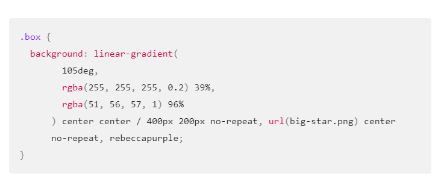

Cascading Style Sheets (CSS) is a stylesheet language used to describe the presentation of a document written in HTML or XML (including XML dialects such as SVG, MathML or XHTML). CSS describes how elements should be rendered on screen, on paper, in speech, or on other media.
CSS (Cascading Style Sheets) is used to style and layout web pages — for example, to alter the font, color, size, and spacing of your content, split it into multiple columns, or add animations and other decorative features. This module provides a gentle beginning to your path towards CSS mastery with the basics of how it works,
what the syntax looks like, and how you can start using it to add styling to HTML.
Let us now look at the program :
h1{ background-color: #CCC;}
This module carries on where CSS first steps left off — now you've gained familiarity with the language and its syntax, and got some basic experience with using it, it's time to dive a bit deeper. This module looks at the cascade and inheritance, all the selector types we have available, units, sizing, styling backgrounds and borders, debugging, and lots more. The aim here is to provide you with a toolkit for writing competent CSS and help you understand all the essential theory, before moving on to more specific disciplines like text styling and CSS layout.
CSS styling text
With the basics of the CSS language covered, the next CSS topic for you to concentrate on is styling text — one of the most common things you'll do with CSS. Here we look at text styling fundamentals, including setting font, boldness, italics, line and letter spacing, drop shadows, and other text features. We round off the module by looking at applying custom fonts to your page, and styling lists and links.
CSS layoutAt this point we've already looked at CSS fundamentals, how to style text, and how to style and manipulate the boxes that your content sits inside. Now it's time to look at how to place your boxes in the right place in relation to the viewport, and to each other. We have covered the necessary prerequisites so we can now dive deep into CSS layout, looking at different display settings, modern layout tools like flexbox, CSS grid, and positioning, and some of the legacy techniques you might still want to know about.
This module carries on where CSS first steps left off — now that you've gained familiarity with the language and its syntax, and got some basic experience using it, it's time to dive a bit deeper. This module looks at the cascade and inheritance, all the selector types we have available, units, sizing, styling backgrounds and borders, debugging, and lots more. The aim here is to provide you with a toolkit for writing competent CSS and help you understand all the essential theory, before moving on to more specific disciplines like text styling and CSS layout.
Prerequisites
(1):Basic familiarity with using computers, and using the Web passively (i.e., just looking at it, consuming the content).
(3):A basic work environment set up as detailed in Installing basic software, and an understanding of how to create and manage files, as detailed in Dealing with files.
(4): Basic familiarity with HTML, as discussed in the Introduction to HTML module.
(5):An understanding of the basics of CSS, as discussed in the CSS first steps module.
Block and inline boxes:
In CSS we broadly have two types of boxes — block boxes and inline boxes. The type refers to how the box behaves in terms of page flow and in relation to other boxes on the page.
Boxes have an inner display type and an outer display type.
In general, you can set various values for the display type using the display property, which can have various values.
p,
ul {
border: 2px solid rebeccapurple;
padding: .5em;
}
.block,
li {
border: 2px solid blue;
padding: .5em;
}
ul {
display: flex;
list-style: none;
}
.block {
display: block;
}

Outer display type:
The box will break onto a new line.
The width and height properties are respected.
Padding, margin and border will cause other elements to be pushed away from the box.
The box will extend in the inline direction to fill the space available in its container.
In most cases, the box will become as wide as its container, filling up 100% of the space available.
The CSS background property is a shorthand for a number of background longhand properties that we will meet in this lesson. If you discover a complex background property in a stylesheet, it might seem a little hard to understand as so many values can be passed in at once.
Background colors:
The background-color property defines the background color on any element in CSS.
The property accepts any valid
In the various lessons so far, you have come across a number of ways to size items on a web page using CSS. Understanding how big the different features in your design will be is important. So, in this lesson we will summarize the various ways elements get a size via CSS and define a few terms about sizing that will help you in the future.
Setting a specific size: We can, of course, give elements in our design a specific size. When a size is given to an element (the content of which then needs to fit into that size) we refer to it as an extrinsic size. Take our
.box {
border: 5px solid darkblue;
height: 150px;
width: 200px;
}
.png)